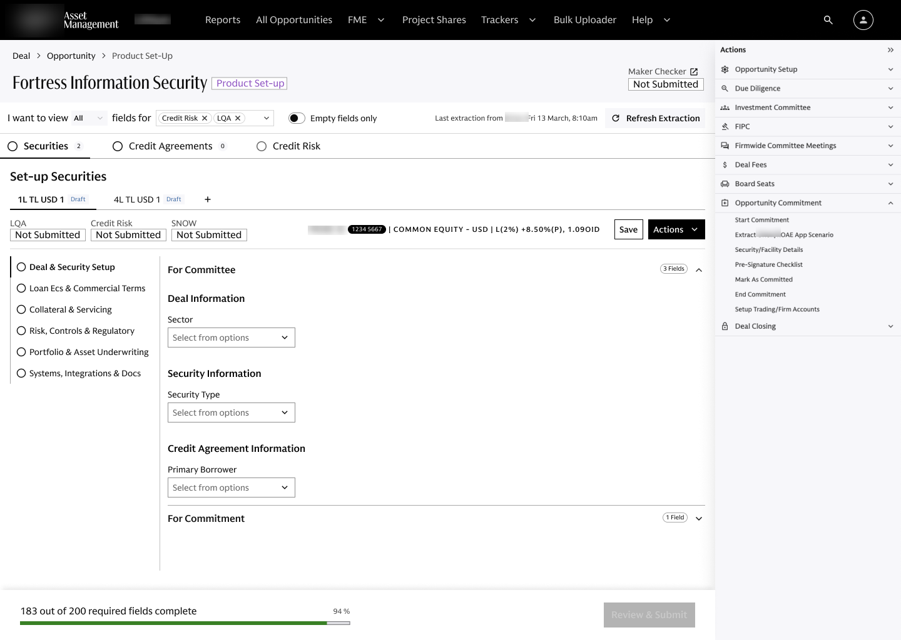
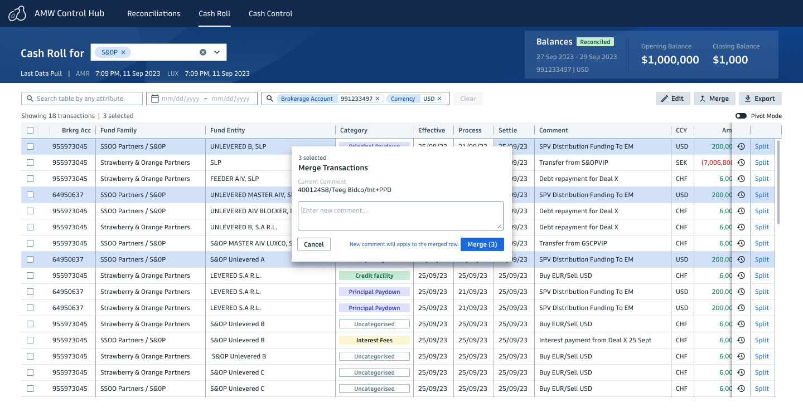
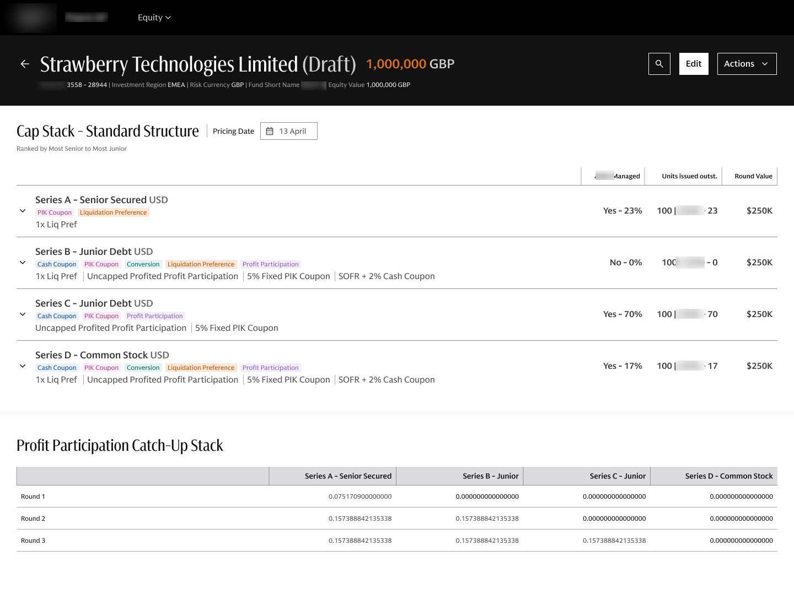
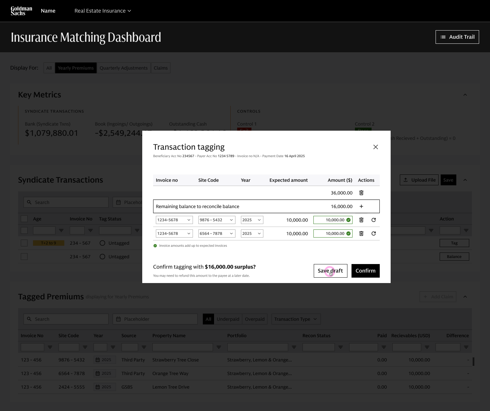
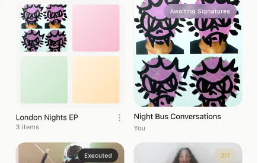
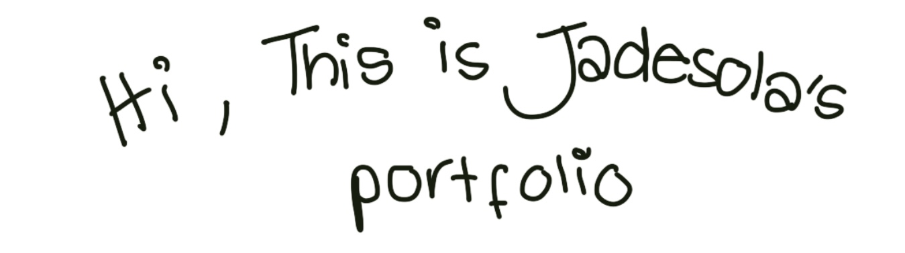

Product Designer
Currently at Goldman Sachs, designing complex solutions for alternative investments.

01
A revamp of an unusable legacy platform for credit agreement setup, Orion integration, and audit trail.
View case study
02
A transaction data grid replacing manual Excel workflows for cash operations.
View case study
03
A standalone platform for structuring capital stacks and capturing deal terms — carved out when the equity scope outgrew its original system.
View case study
04
Replacing email chains and manual invoice tracking with a reconciliation dashboard and tagging flows.

05
A mobile-first app for artists and producers to create, collaborate on, and digitally sign music contracts.
I design for complexity.
Three years designing alternative investment products at Goldman Sachs. Seven greenfield products — most replacing Excel, one replacing nothing at all.
I work where complexity, ambiguity and constraint collide: translating fragmented workflows, dense data and technically complex systems into products that make the impossible feel inevitable.
I work end-to-end, often as the sole designer — from the first question to the shipped product. Increasingly, that means designing with AI, building with AI, and exploring what becomes possible when the boundaries between designer and builder start to blur.
Industrial Design graduate from Loughborough University (2023). Independently working across enterprise fintech and consumer mobile.
LinkedIn ↗
Enter the password to view.
Session Artist
Editorial · Runway · Commercial
Selected Credits
Based in London.
Available for editorial,
runway, and commercial
bookings.
Get in touch
Industrial Design
BA Industrial Design & Technology — 2:1
Selected work from undergraduate study at Loughborough University, 2020–2023.
Degree Projects